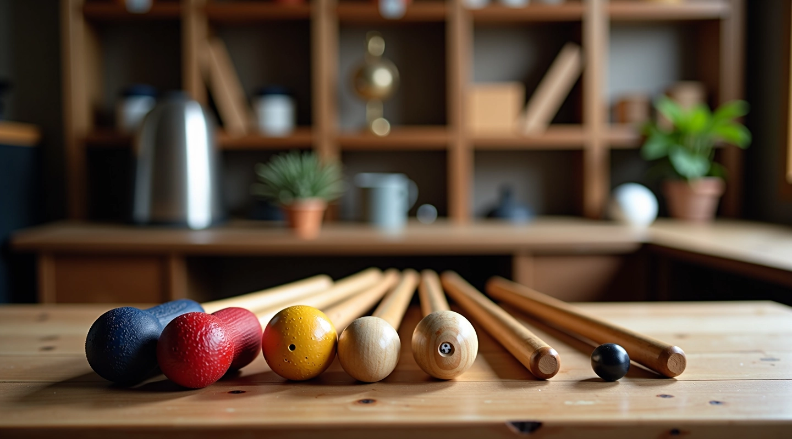

حول ملاعب الدقي للكروكيه
نحن متخصصون في توفير الإرشادات العملية الشاملة حول اختيار معدات الكروكيه المناسبة، مع التركيز على وزن المطرقة والمقبض المناسب لكل لاعب.

أسسنا على الخبرة والشغف
منذ عام 2020، كنّا نعمل على جعل المعلومات عن معدات الكروكيه واضحة وسهلة الفهم للاعبين من جميع المستويات.
ملاعب الدقي للكروكيه Ltd لم تكن مجرد موقع آخر. كنا نعرف أن لاعبي الكروكيه يحتاجون إلى معلومات حقيقية عن كيفية اختيار المطرقة المناسبة. الوزن الصحيح، المقبض الملائم، ومواد البناء — كل هذا يؤثر على أدائك في الملعب.
بدأنا برحلة بسيطة: نريد أن نشارك ما تعلمناه. الآن، لدينا أكثر من 10 أدلة وموارد تفصيلية تساعد اللاعبين على فهم الفروقات بين أنواع المطارق المختلفة. وما زلنا نتعلم ونضيف معلومات جديدة.
لا نقدم ضمانات مستحيلة. نحن نقدم معلومات دقيقة تستند إلى الممارسة الفعلية والخبرة العملية في لعبة الكروكيه.
ما نركز عليه
كل جزء من معدات الكروكيه له دور. نحن نساعدك على فهم هذا الدور بوضوح.
أوزان المطارق
نشرح الفرق الحقيقي بين المطارق الخفيفة والثقيلة، وكيف يؤثر الوزن على قوتك وتحكمك في اللعبة.
أنواع المقابض
من الخشب التقليدي إلى المواد الحديثة، نوضح خصائص كل نوع ومزاياه.
الاختيار حسب مستواك
مبتدئ أو متقدم، نساعدك على اختيار المطرقة المناسبة لقوتك وخبرتك الحالية.
الصيانة والعناية
معدات الكروكيه تحتاج إلى عناية. نشارك نصائح عملية للحفاظ على أدائها الأمثل.
دلائل المقارنة
نقارن بين الخيارات المختلفة لتساعدك على اتخاذ قرار مستنير وصحيح.
إجابات واضحة
الأسئلة الشائعة والمربكة يتم الإجابة عليها بلغة بسيطة وعملية.
كيف نعمل
لا نكتب بناءً على نظريات فقط. كل المحتوى الذي تراه هنا مستند إلى ممارسة فعلية واختبار واقعي لمعدات الكروكيه المختلفة.
عملنا يتضمن دراسة المواد المستخدمة، اختبار أنواع مختلفة من المطارق، والاستماع إلى تجارب اللاعبين الفعليين. ثم نترجم كل هذا إلى معلومات سهلة الفهم.
نحن نؤمن بأن كل لاعب مختلف. لا توجد إجابة واحدة تناسب الجميع. لذلك نركز على شرح العوامل التي تساعدك على اتخاذ قرارك الخاص بثقة.
ما يهمنا حقاً
الوضوح فوق كل شيء
نكتب بلغة بسيطة. لا توجد مصطلحات معقدة غير ضرورية. إذا استخدمنا كلمة تقنية، نشرحها جيداً.
الصدق في المعلومات
لا نبالغ في المطالبات. المعلومات التي نقدمها دقيقة وقابلة للتحقق. نخبرك بما تحتاج فعلاً إلى معرفته.
التركيز على الاستخدام العملي
كل نصيحة يجب أن تكون قابلة للتطبيق. نساعدك على فهم كيفية استخدام هذه المعلومات في الملعب الفعلي.
احترام اختلاف اللاعبين
لاعبون مختلفون لهم احتياجات مختلفة. نركز على مساعدتك في اختيار ما يناسب أنت بالتحديد، لا نفرض رأياً واحداً.
ملاحظة مهمة
المعلومات المقدمة على هذا الموقع مخصصة للأغراض التعليمية والإعلامية. بينما نسعى جاهدين لتقديم معلومات دقيقة وحالية، تختلف النتائج من لاعب لآخر بناءً على عوامل مختلفة مثل المهارة والخبرة والتطبيق العملي. نوصي بشدة باستشارة لاعبين ذوي خبرة أو مدربين قبل إجراء تغييرات كبيرة على معدات اللعب الخاصة بك. نحن لا نقدم ضمانات بشأن النتائج المحددة، بل نوفر إرشادات عملية لمساعدتك على اتخاذ قرارات مستنيرة.